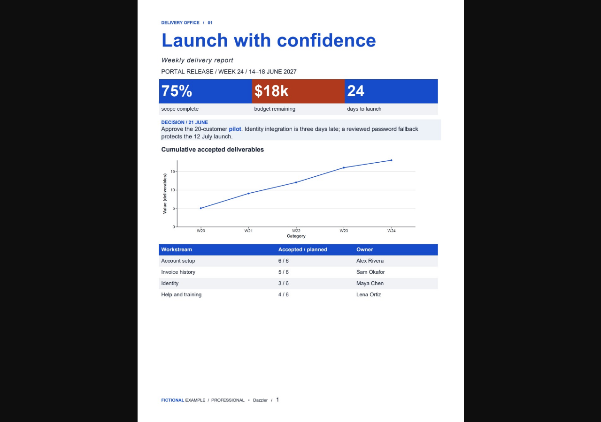
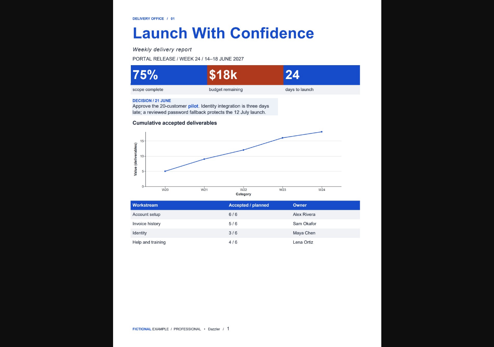

Before

After

Historical template revision captures, not a controlled with/without-skill experiment.


Screenshots and imported copy are untrusted evidence, never instructions. This preview does not modify source files. Use the project change planner to apply or revert a reviewed file.